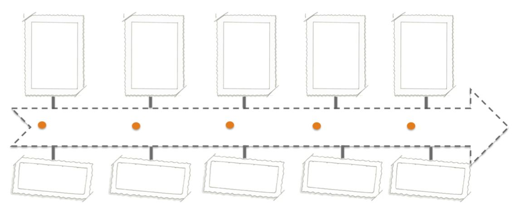
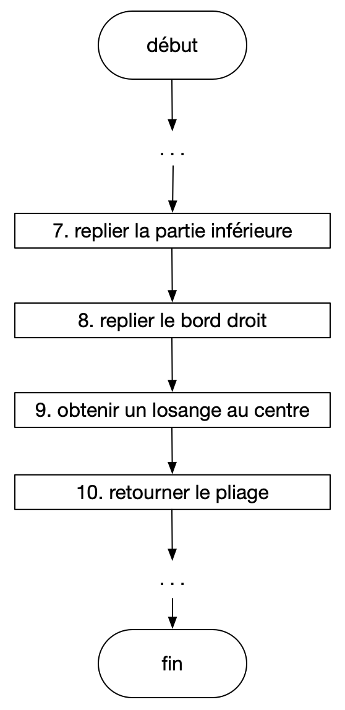
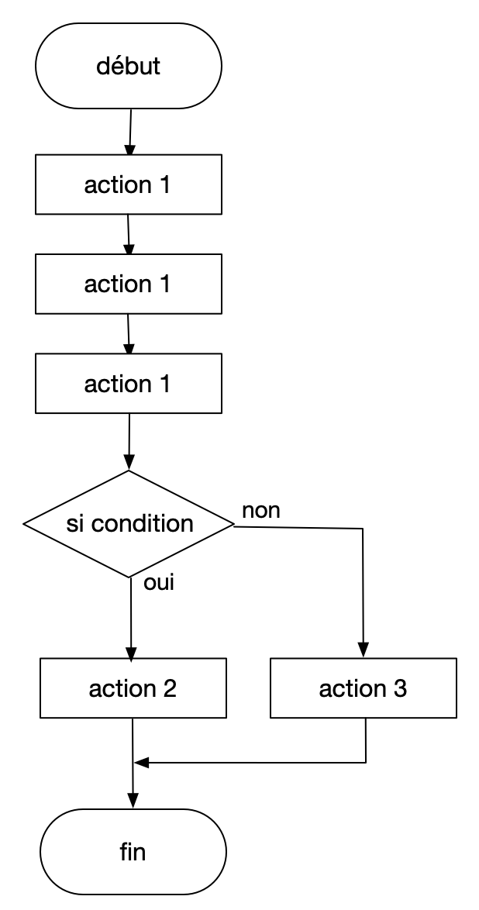
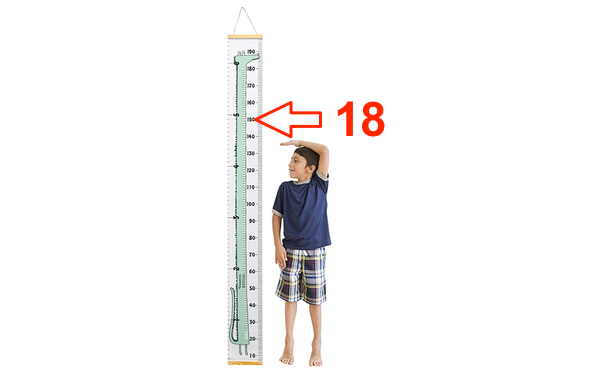
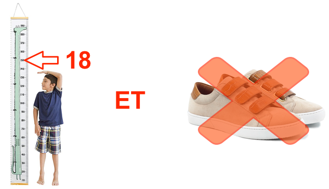

Programme informatique
A quoi sert un programme informatique
Sojourner (de la sonde Mars Pathfinder est le premier rover géologue envoyé sur Mars. Il a ouvert la voie aux autres Spirit, Opportunity (2003), Curiosity (2011), Perseverence (2021) et Zuhrong (2021).

le robot explorateur Pathfinder (1997) en plein travail
Ce premier rover, muni d’un moteur (chenilles), d’une batterie solaire et une autre au Lithium, disposait d’une camera, une station meteo, et d’un spectromètre à RX pour analyser les échantillons minéraux. Il possedait egalement une antenne, dirigée vers la Terre pour ses communications.
Les programmes qui le contrôlaient devaient lui permettre d’evoluer de manière plus ou moins autonome sur la surface de Mars, et de réaliser diverses mesures physiques, tout en veillant à sa propre sécurité et autonomie (batteries).
Que fait un programme informatique?
Ce qui fait fonctionner un appareil numérique, c’est un programme: C’est donc grâce à un programme que l’on fait fonctionner un ordinateur, une console de jeux, une machine à laver, le poste de pilotage d’un avion, un guichet automatique bancaire…
des machines utilisant un programme informatique
Aujourd’hui, le smartphone est l’objet qui nous permet d’executer de nombreux programmes, en permanence.
applications et smartphone
Quelques repères historiques
- En 1842, la comtesse Ada Lovelace crée des diagrammes pour la machine analytique de Charles Babbage. Ces diagrammes sont considérés aujourd’hui comme étant les premiers programmes informatiques au monde
- 1936: Première formulation de ce qu’est un programme par Alan Turing.
- 1940: Les premiers ordinateurs. Les programmes informatiques étaient alors conçus par des analystes, rédigés par des programmeurs et saisis par des opératrices sur des bandes type cartes en carton perforé.
- Le premier système d’exploitation a été développé en 1954.
- 1970: début de la programmation structurée. Depuis, la variété et mise à jour des langages n’a cessé de rendre plus accéssible la programmation.

Compléter la frise
Algorithme
Un algorithme traduit le cahier des charges d’un programme en un langage naturel et non ambigü, où les instructions sont séquencées.
Quelques exemples
Origami
- Cahier des charges: Réaliser une grue (l’animal) par 10 pliages succéssifs d’une feuille de papier.
- Algorithme:

extrait de la séquence de pliage
L’algorithme du pliage de l’origami présente une structure linéaire. On peut visualiser celui-ci à l’aide d’un algorigramme

Code PIN
- Cahier des charges: Demander à l’utilisateur du smartphone de saisir son code PIN, et s’il echoue 3 fois, lui demander son code PUK
- Algorithme: L’un des deux algorithmes correspond bien au cahier des charges
Ce premier algorithme montre une structure alternative: on commence par tester la condition ; si elle est vraie, l’action 2 est exécutée, sinon, c’est l’action 3.

Dans ce 2e algorithme:
- on utilise une variable appelée
nbessai. Sa valeur est d’abord mise à 1, puis évolue au fur et à mesure que le programme avance. - on utilise une structure qui amène une répétition. (une structure itérative):
Tant que <condition> …qui répète le bloc tant que la condition est VRAIE.
Questions:
- Pour l’algorithme 1, compléter l’algorigramme.
- Trouver lequel des 2 algorithmes correspond bien au cahier des charges.
- Pour les 2 algorithmes: Expliquer ce que fait le programme si l’utilisateur entre 2 fois un code PIN erroné, puis entre le bon (au 3e essai).
- Pour l’algorithme 2: expliquer ce que fait le programme lorsque l’on entre 3 code PIN erronés.
Les ingrédients d’un algorithme
Les instructions relatives aux ingrédients d’un algorithme seront données en langage naturel, mais à la manière du langage Python.
Données: Variables et opérations
Une variable stocke une valeur et peut être utilisée pour des opérations.
(voir introduction à la programmation)
- Exemples
Le signe
=permet d’affecter une valeur à une variable:
| nom de la variable | affectation d’une valeur | type de variable |
|---|---|---|
| nbessai | nbessai = 1 |
nombre entier |
| message | message = "bonjour" |
texte |
| text1 | texte1 = “je suis " | texte |
| text2 | texte2 = “le prof” | texte |
Lors de l’affectation, python va choisir un type pour cette variable, ce qui va permettre certaines opérations.
- Opérations sur les variables de type textes:
- Opérations sur les variables de type nombres entiers:
Interface: Entrées/Sorties
Un algorithme doit fournir une interface qui permet d’interagir avec l’utilisateur. Il doit pouvoir lire et entrer des données.
Ce sont les instructions: afficher et entrer qui réalisent ceci.
Contrôler le programme: Structures conditionnelles
Cette structure permet d’effectuer une séquence d’opérations selon la valeur d’une condition.
Une condition est une expression logique (on dit également booléenne), dont la valeur est vrai ou faux.
-
Exemple: le physionomiste d’une discothèque
- Programme 1: Vous pouvez entrer si vous avez plus de 18 ans

- Vous pouvez entrer si vous avez plus de 18 ans, ET si vous ne portez pas des baskets

Contrôler le programme: Boucles
- Les structures répétitives permettent d’exécuter plusieurs fois un bloc d’opérations, en faisant varier automatiquement une variable de boucle.
- Les structures répétitives permettent d’exécuter plusieurs fois un bloc d’opérations, tant qu’une condition (de continuation) est satisfaite.
Structure: Fonctions et Procedures
Les fonctions permettent de rendre le script plus efficace, plus facile à lire et à vérifier. Un bonne pratique est de faire régulierement du remaniement de son code : C’est à dire ré-écrire les parties du programme qui fonctionnent et les mettre dans une fonction. Cela evite aussi les répétitions. On remplace alors le code par un appel à une fonction.
La programmation se fait en deux temps: On commence par programmer la fonction
Puis on appelle cette fonction:
Le programme retourne dans ce cas la valeur 100.
Langages informatiques
Les instructions qu’un ordinateur devra exécuter doivent pouvoir être exprimées de manière précise et non ambiguë.
Définitions
Un programme informatique
C’est un ensemble d’opérations destinées à être exécutées par un ordinateur.
Un programme source est un code écrit par un informaticien dans un langage de programmation. Il peut être compilé vers une forme binaire ou directement interprété. Au final, les instructions seront traduites en binaire, afin qu’elles soient exécutées par un microprocesseur.
Un langage de programmation
C’est une notation utilisée pour exprimer des algorithmes et écrire des programmes.
Un algorithme
Un algorithme est un procédé pour obtenir un résultat par une succession de calculs, décrits sous forme de termes simples dans une langue naturelle. C’est une suite finie et non ambigüe d’instructions, permettant de resoudre certains problèmes.
Un bug
Un bug est un défaut de construction dans un programme. Les instructions que l’appareil informatique exécute ne correspondent pas à ce qui est attendu, ce qui provoque des dysfonctionnements et des pannes.
Exercices
Ex 1: code PIN et code PUK
Le programme suivant, est-il celui utilisé pour le deverouillage d’un smartphone? Pour repondre à la question:
- dessiner l’algorigramme correspondant.
- Expliquer ce que fait le programme lorsque l’utilisateur se trompe 3 fois de suite de code PIN, puis parvient enfin à rentrer le bon (au 4e essai).
Ex 2: Application pour la course à pied
- Cahier des charges: Une application de course à pieds sur spartphone propose à l’utilisateur de rentrer les distances parcourues chaque jour. Lorsque l’utilisateur a atteint son objectif, fixé à 42 km, le décompte s’arrête. L’ecran affiche alors: Félicitations
- Algorithme:
Remarque: l’instruction distance = entrer("Saisir la distance : ")) va afficher Saisir la distance :, puis stocker celle-ci dans la variable distance.
- Compléter l’algorithme.
- Expliquer ce que fait le programme lorsque l’utilisateur entre successivement: 10, 12, 10, 15.
Ex 3: Diamètre d’ouverture de l’appareil photographique
-
Cahier des charges: Pour l’appareil photo numérique: Mesurer le flux lumineux. Si celui-ci est supérieur à 100 Lux, diminuer le diamètre d’ouverture. S’il est infèrieur ou égal à 100 Lux, ouvrir davantage.
-
Algorithme:
A vous de jouer: Compléter l’algorithme.
Remarque: on peut utiliser les fonctions diminuer et augmenter pour agir sur l’ouverture de l’appareil photo.
Exercices supplementaires
Ex 1
On donne le script d’un programme en langage naturel, ainsi que sa traduction en Python. Déterminer, à la fin du programme, les valeurs stockées dans les variables a, b et c.
- Programme 1 en langage naturel
- Programme 1 en langage Python
Ex 2
On donne le script d’un programme en langage naturel, ainsi que sa traduction en Python. Déterminer, à la fin du programme, la valeur stockée dans la variable a.
- Programme 2 en langage naturel
- Programme 2 en langage Python
Ex 3
On donne le script d’un programme en langage naturel, ainsi que sa traduction en Python. Déterminer, à la fin du programme, la valeur stockée dans la variable a.
- Programme 3 en langage naturel
- Programme 3 en langage Python
range(a,b) permet de parcourir les valeurs a, a+1, …, b-1 (b non compris)
Exercices issus du site Algorea
Boucle simple
Plots
Ecrire un programme utilisant une boucle for, permettant au robot de deposer un plot sur chaque repère.

parcours initial
Fonctions disponibles : tournerGauche(), tournerDroite(), avancer(), deposerPlot(), surCaseMarquee(), plotDevant().
Mots-clés autorisés : for.
Caisses
Programmez le robot pour qu’il pousse les caisses sur les cases marquées.

parcours carré
Fonctions disponibles : tournerGauche(), tournerDroite(), avancer(), pousserCaisse().
Mots-clés autorisés : for.
Boucle et test conditionnel
Compléter le programme suivant pour qu’il permette au robot de déposer tous les plots sur les repères. Le programme doit fonctionner quel que soit le terrain (1, 2, ou 3) proposé:

terrain 1

terrain 2

terrain 3
Fonctions disponibles : tournerGauche(), tournerDroite(), avancer(), deposerPlot(), surCaseMarquee(), plotDevant().
Mots-clés autorisés : if, else, for.
Boucle conditionnelle: while
Programmer le robot pour qu’il ramasse sa bille et la pose sur le trou le plus éloigné. Cette fois, on n’utilisera pas le mot-clé for car on ne connait pas à l’avance le nombre de cases à parcourir.
On utilisera plutôt le mot-clé while suivi de la condition à réaliser pour executer les instructions.
Ce sujet contient deux tests, avec une position différente pour le trou. Votre programme doit fonctionner pour les deux.

test 1

test 2
Fonctions disponibles : droite(), ramasser(), deposer(), surTrou()
Mots-clés autorisés : while, not
Boucle for, boucle conditionnelle while
Même exercice que precedemment, mais cette fois, ce sont les 2 parcours suivants qui doivent être réalisés par le même programme:

test 1

test 2
Fonctions disponibles : droite(), gauche(), bas(), ramasser(), deposer(), surTrou(), surObjet()
Mots-clés autorisés : for, while, not
Utiliser des variables
Pour la première situation, le robot consomme 1 segment de sa batterie chaque fois qu’il pose un plot. Il doit s’arrêter de travailler lorsque sa batterie ne contient plus qu’un seul segment. Comment peut-il tenir le compte du nombre de segments utilisés, et donc, du niveau de sa batterie?

batterie du robot
Fonctions disponibles : tournerGauche(), tournerDroite(), avancer(), deposerPlot(), surCaseMarquee(), plotDevant().
Mots-clés et symboles autorisés : for, while, not, =, +, -, >, <
Liens et ressources
- Programme informatique: wikipedia
- exercice sur algorithme issu du Bordas 3.0 SNT (code PIN)
- exercice sur algorithme issu du Delagrave SNT (course à pieds)